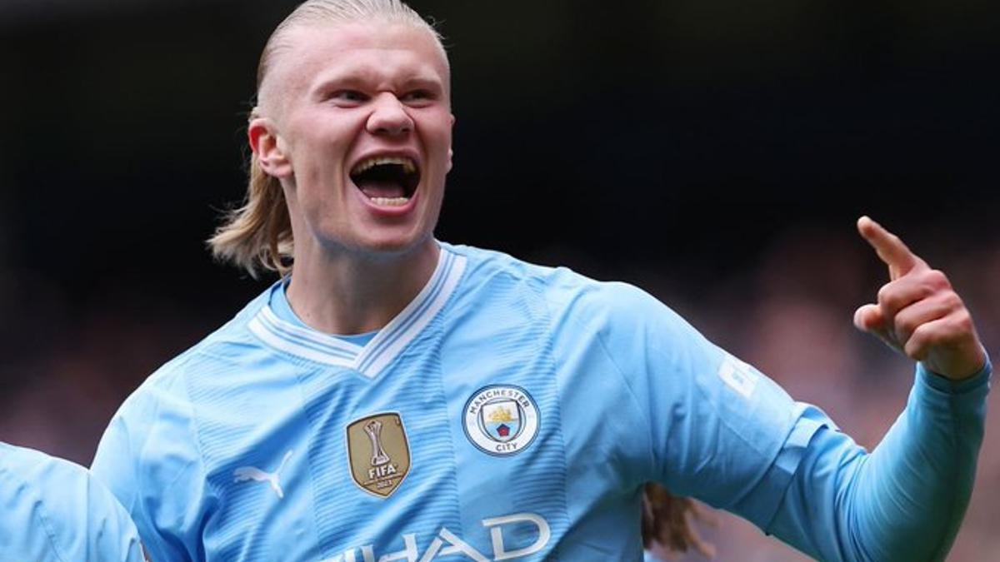
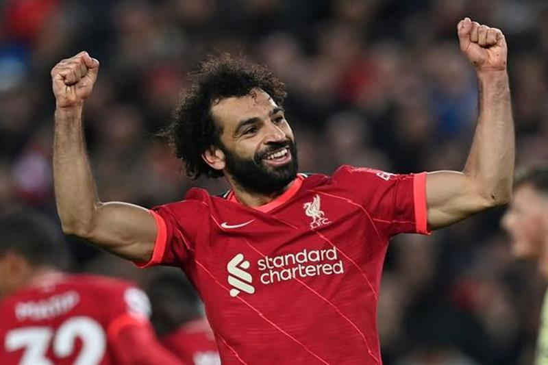
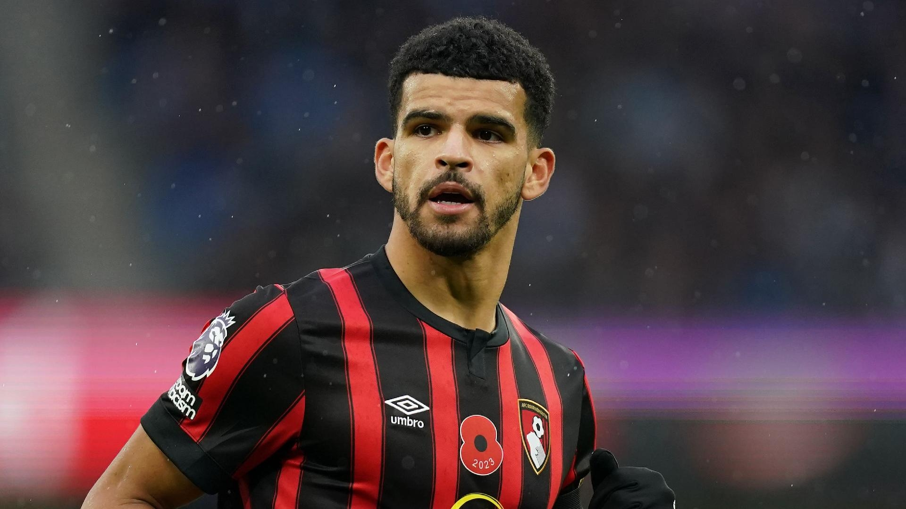
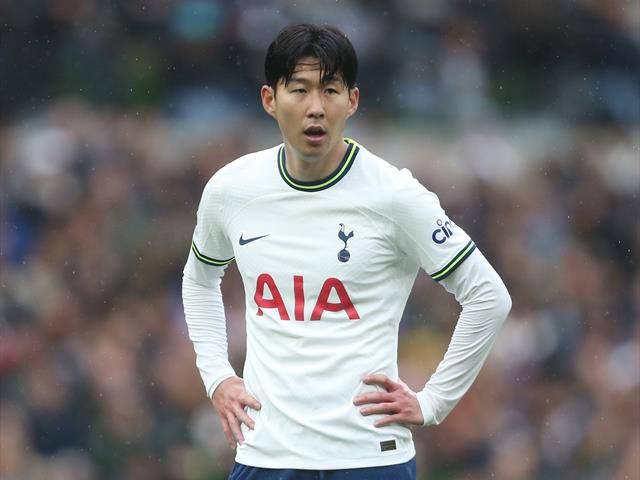
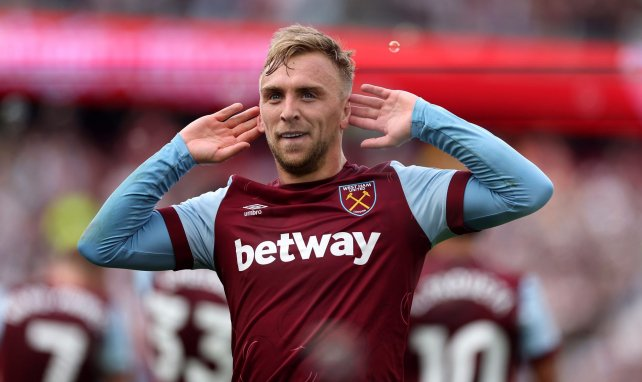

Clasificación
| Posición | Equipos | Puntos |
|---|---|---|
| 1 | Liverpool | 32 |
| 2 | Arsenal | 26 |
| 3 | Tottenham | 26 |
| 4 | Manchester City | 22 |
| 5 | Aston Villa | 21 |
| 6 | Chelsea | 20 |
| 7 | Manchester United | 18 |
| 8 | Leicester City | 17 |
| 9 | West Ham United | 16 |
| 10 | Everton | 15 |
| 11 | Newcastle United | 14 |
| 12 | Crystal Palace | 13 |
| 13 | Brentford | 12 |
| 14 | Wolverhampton Wanderers | 11 |
| 15 | Southampton | 10 |
| 16 | Leeds United | 9 |
| 17 | Burnley | 8 |
| 18 | Watford | 7 |
| 19 | Norwich City | 6 |
| 20 | Nottingham Forest | 5 |
Máximos Goleadores
| Posición | Jugador | Goles | Equipo |
|---|---|---|---|
| 1 | Erling Haaland | 16 | Manchester City |
| 2 | Mohamed Salah | 14 | Liverpool |
| 3 | Dominic Solanke | 13 | Bournemouth |
| 4 | Heung Min Son | 13 | Tottenham Hotspur | 5 | Jarrod Bowen | 11 | West Ham |

El delantero noruego sigue hambriento y no se cansa de superarse a sí mismo año tras año

Para muchos, el mejor jugador de la historia de la Premier League. El Faraón,Mohamed Salah

El año de consagración de esta eterna promesa. Iraola ha logrado sacarle el máximo rendimiento

Tras una decepcionante copa Asiática,Son busca resarcirse donde mejor se le da

Jarrod Bowen, extremo polivalente que representa mejr que nadie lo que es ser un Hammer.
Equipos
Últimas noticias
-
17:48
El Arsenal sacude al West Ham en un partido histórico
-
17:02
El secreto de Ange Postecoglou
-
15:58
La pelea por el descenso, más dura que nunca